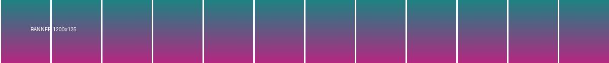

39. the banner across the top of the page
must NOT preview: above the content, alone, and unlike anything else here

40. control for 39 — a one-column gallery, also at the top
must still preview: wide and alone on its line, but not unique — they match each other

Red = Hover Zoom+ rejects this outright. Every thumbnail here has a 1600×1200 original.
1. plain .jpg thumbnail
HZ+: works — the control case

2. .png thumbnail
HZ+: rejected, src is not .jpg

3. .webp thumbnail
HZ+: rejected, src is not .jpg

4. .jpg with a query string
HZ+: rejected, .jpg not the last 4 chars (issue #395)

5. displayed at 420px
HZ+: rejected, over the hardcoded 300×300 cap

6. src is only 1.33× the displayed size
HZ+: rejected, needs natural ≥ 1.8× displayed
7. srcset, widest wins
HZ+: never reads srcset in the generic path
8. lazy-loaded via data-src
HZ+: reads only src in the generic path
9. CSS background-image
HZ+: generic path only looks at <img>
10. /thumbs/ path segment
HZ+: no generic path rewriting at all

11. wrapped in a link to a page
HZ+ default.js: href carries no media extension
12. tiny icon
both skip: below the minimum size

13. already the original
both skip: nothing larger exists

14. original smaller than the window
frame opens below the viewport cap, so zooming grows the frame itself
16. viewer link carrying ?imgurl=
HZ+: only via its Google plugin, not the generic path
15. slow original (3s)
the resolve spinner should appear and turn — needs test-server.py
17. thumbnail inside a video link
must NOT preview: the link is plainly a video (skipVideos)
18. thumbnail beside an inline player
must NOT preview: a <video> sits in the same card (skipVideos)
21. thumbnail beside a playing gif-style clip
must preview: muted, looping, no controls — an animated picture, not a player
22. the same card, but the clip has controls
must NOT preview: controls make it a player (skipVideos)
23. the upgrade is a video
HZ+: no equivalent — the preview itself plays, muted and looping
24. the linked page declares a video
HZ+: no equivalent — the clip comes from the page, not from the URL
25. the linked page's image is no bigger than the thumbnail
must still preview: the page is authoritative, so no ratio gate
26. the linked page says it is a different page
must NOT preview: og:url disagrees, so nothing it declares is trusted
27. hovering the playing clip itself
HZ+: no equivalent — no <img> exists, the grid item IS the video
28. the same clip on a video site's listing
must NOT preview: /watch? means a player page is behind it
19. control for 17/18 — an ordinary link
must still preview: /gallery/ is not a video shape
29. an invisible link laid over the whole card
HZ+: no equivalent — the pointer never reaches the <img>
30. one cover over TWO pictures
must NOT preview: a grid, not a card — no answer to which picture
31. text sitting on a background
must NOT preview: the walk only looks through to an <img>, never a background
hover this text
32. background the page's own text sits on
must NOT preview its blank space: a backdrop, not a picture
A backdrop carries the page's own copy, which is what
separates it from a picture. Hover the blank space below this paragraph.
33. background fixed to the window
must NOT preview: it does not scroll, so it is decoration
34. image the page marks as decoration
must NOT preview: aria-hidden="true" says it is not content
36. a rotating banner endpoint
?loc= is the request, not a resize — stripping it asks for a different picture

37. the candidate is a different shape
a 9.6:1 masthead does not upgrade to a 1:1 picture — its own original still does
20. upgrade in place, slowly
HZ+: no equivalent — opens 800×600, then swaps to 1600×1200